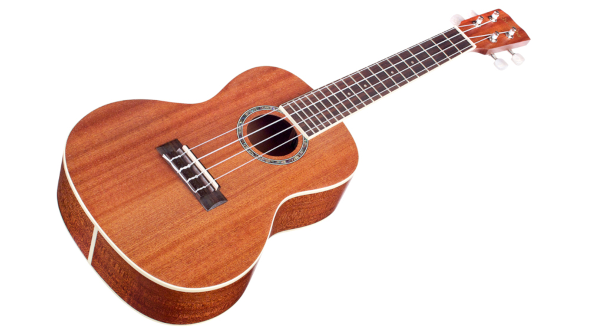

You might be asking yourself why you would need to read a guide to the best ukuleles? Well, whether you're looking for a cost-effective, easy-to-learn instrument, something cool to add to a busking or live performance setup, or a compact instrument that's portable enough to take on your travels, the ukulele fits the bill perfectly.
What is the best ukulele you can buy?
If money is no object, there's no reason not to splash your cash on the Martin T1K Tenor ukulele. Although there are more expensive models out there, this represents the best sounding uke we've tried that's not rare, vintage, or a custom order. If the ukulele is your main instrument, then you should perhaps consider spending more, but for most players the benefits above this price will be so marginal that you probably won't hear or feel them.
If you're looking for a great ukulele for beginners to learn on, or a compact uke to jam with at home, take to festivals or strum in the park, then there's one ukulele on this list with the right mix of value for money and fun. Our choice is the Mahalo. In particular we love the 'flying V' variant, but they do so many styles in a range of colours that you won't struggle for choice. So long as you don't take yourself too seriously, this is an inexpensive way to get started with the ukulele. It would also make a great gift for guitarists who don't already own one.
This is the list of the 9 best ukuleles of 2020:
Mahalo Soprano Ukulele
Kala Mahogany Ukulele
Martin T1K Tenor Ukulele
Fender Venice ukulele
Yamaha Guitalele ukulele
Ukutune UKE1 23" Concert Ukulele
Fender Grace VanderWaal Zuma Signature
Ashbury Resonator Ukulele
Risa LP Electric Tenor Ukulele
The Top 4 Best Ukulele Brands 2020
If you have ever searched for a new ukulele you will probably have noticed the huge number of brands that offer this particular instrument. The ukulele is a relatively affordable instrument, and many instrument makers have a go at making their own version of the best.
There are brands which are relatively new, brands that should be avoided, and even brands with hundreds of years of history for you to check out. We explore the very best ukulele brands in this guide and even mention some of their flagship models.
Here are the best ukulele brands 2020:
Cordoba
The ukuleles within their range tend to be very good quality. They have a large range and cater to people wanting all different sizes. Their range even has a lot of products with pickups included, so that amplification is a breeze. They’re great for live and studio use.
Kala
Kala is an incredibly prolific ukulele manufacturer. They celebrated their 15th anniversary in 2020, but you could easily think they had been around much longer if you look at the range. The company isn’t Hawaiian, but not many of the modern ukulele makers are. In fact they are based on the west coast, ‘nestled in the Sonoma wine country’.
Martin
If you want a historic ukulele brand then this is the one for you. Very few music brands have the history that Martin can offer. This comes with extra expense, but you can’t argue with the design and quality of their instruments.
One of the things that sets the Martin range apart is their choice of materials as they use only the very best tonewoods and hardware. If you are looking for a model that isn’t on the top end of their pricing structure but does a professional job and gives the Martin quality, consider the Martin 1T IZ tenor ukulele. This is made from beautiful mahogany woods and the tone is beautifully bright. You are paying extra, but for real quality.
Lanikai
Lanikai is another brand that operates at both the beginner end of the market and provides products for the real pros and audiophiles. Not a great deal is published about the history of the brand, but they are distributed by Hohner. This association can only be a good thing and Lanikai can rely on their rich history of folk instrumentation.
Latest articles
Review Cordoba 15CM Concert Ukulele

This is one of our all-time favorite ukes to recommend. The Cordoba 15CM features mahogany top, back and sides, which give it a uniquely rich and complex tone. This ukulele is completely handmade, the build quality is second-to-none, and it includes some features found only on much more expensive ukuleles.
The 15CM has a sleek satin finish, abalone rosette, silver tuners with pearl buttons, and it comes stock with premium Aquila strings. It looks very classy, but still has that simple classic look that you expect from a traditional ukulele. This ukulele is a great option for both beginners and experienced players.
Types of ukuleles
The ukulele is a beautiful wooden stringed instrument that produces a unique sound that’s pleasant to the ears. Luckily for all of us ukulele players, there is a wide variety of ukuleles to play, coming in different sizes, wood types, and even ones that were designed for certain playing styles. With so many different types of ukuleles, it’s important to understand the differences between all of them so you can figure out which type of uke is best for your current needs. Whether you’re a beginner or an advanced player, we put together this guide to help you.
Baritone Ukulele
Baritone ukuleles are the largest size have a different, lower-pitched tuning: D-G-B-E. This is exactly like the four highest-pitched strings of a guitar.
Banjo Ukulele (Banjolele)
A banjo ukulele has four strings and is tuned exactly like a standard ukulele, but it has the body of a banjo. They’re commonly called banjoleles and are one of the most popular “non-standard” types of ukuleles.
Guitalele
A guitalele is a six-string ukulele. Most guitaleles have a baritone ukulele body size, which is the largest of the four primary ukuleles sizes. Guitaleles are also known as guitar ukuleles and (less commonly) guileles.
Bass Ukulele
A bass ukulele is simply a bass guitar with the body of a baritone ukulele. The tuning of a bass ukulele is identical to a standard bass: E-A-D-G. This is also the same as the bottom four strings of a guitar.
Acoustic-Electric Ukulele
An acoustic-electric uke is simply a traditional ukulele that has been outfitted with electronics which allow the uke to be plugged into an amplifier. These electronics are known as a pickup.
Electric Ukulele (Solid Body)
A solid body electric ukulele has a body made using a solid piece of wood rather than the open “box” found on a traditional acoustic ukulele. It is essentially a uke-sized version of the solid body electric guitars you’ve seen and heard in lots of modern music.
Resonator Ukulele
A resonator ukulele is a scaled-down version of the resonator guitar, which is a popular guitar choice for blues and slide players. Other names include resophonic ukuleles or reso ukes.
Archtop Ukulele
An archtop ukulele is the uke version of an archtop guitar. They’re tuned and played like a standard ukulele (G-C-E-A) with the only difference being the appearance of the instrument.
Pineapple Ukulele
This ukulele has a half pineapple shaped body in place of a regular shaped body. Some people see this shape as a bit of novelty but it actually produces a stronger, more resonance sound than a normal, traditionally shaped ukulele.
Review Kala KA-KTG Hawaiian Koa Tenor Ukulele
The Kala KA-KTG is a beautiful, all-solid Koa uke that greatly exceeds what you would expect from a good quality ukulele. Koa is the Hawaiian wood traditionally used to make ukuleles, and the KA-KTG has a beautiful, rich, bright, throwback ukulele tone.
This tenor ukulele is also a looker, featuring white maple trim and mother-of-pearl inlay. Not to mention the deep grain of the beautiful koa wood. It’s not wonder this is our top choice for a tenor uke.